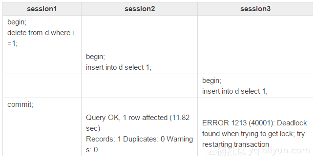
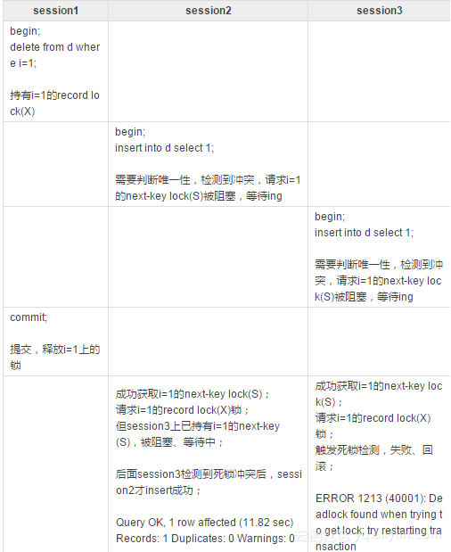
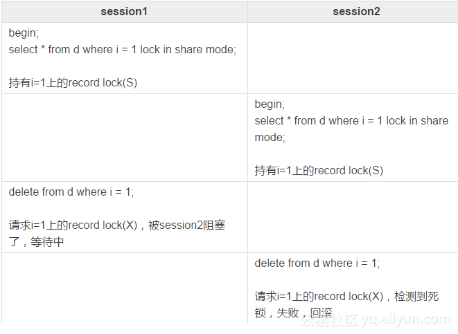

| 创建时间： | 2018/10/22 22:45 |
| 标签： | 微信 |
| 来源： | https://m.aliyun.com/yunqi/articles/198655 |
1年前 2121
两个INSERT也能发生死锁？貌似不可思议，实际上是正常的。
本文整理过程中，先后向高鹏、王少华、苏斌等几位朋友请教确认，感谢。
开始之前，关于锁、死锁，我们要先统一下几点认知：
好了，正式开始今天的案例。
先看测试表DDL：
yejr@imysql.com [yejr]>show create table d\G ********************** 1. row ********************** Table: d Create Table: CREATE TABLE `d` ( `i` int(11) NOT NULL DEFAULT '0', PRIMARY KEY (`i`) ) ENGINE=InnoDB DEFAULT CHARSET=utf8mb4; yejr@imysql.com [yejr]>select * from d; +---+ | i | +---+ | 1 | +---+然后我们执行下面的测试：

这时候我们看下InnoDB STATUS的输出：
------------------------ LATEST DETECTED DEADLOCK ------------------------ 2017-09-02 14:59:08 0x700004208000 *** (1) TRANSACTION: TRANSACTION 274616, ACTIVE 12 sec inserting mysql tables in use 1, locked 1 LOCK WAIT 3 lock struct(s), heap size 1136, 2 row lock(s) MySQL thread id 16, OS thread handle 123145373167616, query id 398 localhost root executing insert into d select 1 *** (1) WAITING FOR THIS LOCK TO BE GRANTED:RECORD LOCKS space id 510 page no 3 n bits 72 index PRIMARY of table `yejr`.`d` trx id 274616 lock_mode X locks rec but not gap waiting Record lock, heap no 2 PHYSICAL RECORD: n_fields 3; compact format; info bits 32 0: len 4; hex 80000001; asc ;; 1: len 6; hex 0000000430b3; asc 0 ;; 2: len 7; hex 3b0000018027a4; asc ; ' ;; *** (2) TRANSACTION: TRANSACTION 274617, ACTIVE 4 sec inserting mysql tables in use 1, locked 1 3 lock struct(s), heap size 1136, 2 row lock(s) MySQL thread id 18, OS thread handle 123145371549696, query id 400 localhost root executing insert into d select 1 *** (2) HOLDS THE LOCK(S):RECORD LOCKS space id 510 page no 3 n bits 72 index PRIMARY of table `yejr`.`d` trx id 274617 lock mode S(想想，哪里冒出来的S锁？)Record lock, heap no 2 PHYSICAL RECORD: n_fields 3; compact format; info bits 32 0: len 4; hex 80000001; asc ;; 1: len 6; hex 0000000430b3; asc 0 ;; 2: len 7; hex 3b0000018027a4; asc ; ' ;; *** (2) WAITING FOR THIS LOCK TO BE GRANTED:RECORD LOCKS space id 510 page no 3 n bits 72 index PRIMARY of table `yejr`.`d` trx id 274617 lock_mode X locks rec but not gap waiting Record lock, heap no 2 PHYSICAL RECORD: n_fields 3; compact format; info bits 32 0: len 4; hex 80000001; asc ;; 1: len 6; hex 0000000430b3; asc 0 ;; 2: len 7; hex 3b0000018027a4; asc ; ' ;; *** WE ROLL BACK TRANSACTION (2)从上面这个输出来看，我们看到的现场是两个 insert 请求发生了死锁。单纯看这2个SQL的话，应该是产生锁等待才对，而不是死锁。
按照我们常规理解，session1 未 commit 前，应该是持有 i=1 上的record lock(X)，而session2 和 session3 则都在等待这个锁的释放。而实际上呢，肯定不是这样的，否则也不至于发生死锁了。
关于InnoDB行锁更详细的知识点我们以后找时间再说。这次的案例其实在MySQL官方文档上已经解释过了，而且也给了演示案例（如本例）。文档中是这么说的：
INSERT sets an exclusive lock on the inserted row. This lock is an index-record lock, not a next-key lock (that is, there is no gap lock) and does not prevent other sessions from inserting into the gap before the inserted row. Prior to inserting the row, a type of gap lock called an insert intention gap lock is set. This lock signals the intent to insert in such a way that multiple transactions inserting into the same index gap need not wait for each other if they are not inserting at the same position within the gap. Suppose that there are index records with values of 4 and 7. Separate transactions that attempt to insert values of 5 and 6 each lock the gap between 4 and 7 with insert intention locks prior to obtaining the exclusive lock on the inserted row, but do not block each other because the rows are nonconflicting. 【敲黑板、划重点】If a duplicate-key error occurs, a shared lock on the duplicate index record is set. This use of a shared lock can result in deadlock should there be multiple sessions trying to insert the same row if another session already has an exclusive lock. This can occur if another session deletes the row. 划重点的核心内容是：当需要进行唯一性冲突检测时，需要先加一个 S 锁。
这样的话，上面案例的加锁过程就不是之前推测的那样，而是像下面这样了：

下面是另一个类似的案例：

通过上面这两个案例，其实想要告诉大家的是：发生死锁时，不能只看现场，还得分析过程，才能知道真正的原因，死锁发生的原因也并不复杂，但是得能想办法还原过程。
原文发布时间为：2017-09-05
本文来自云栖社区合作伙伴“老叶茶馆”，了解相关信息可以关注“老叶茶馆”微信公众号
mysqlinnodb高并发lockTransactionindexthread